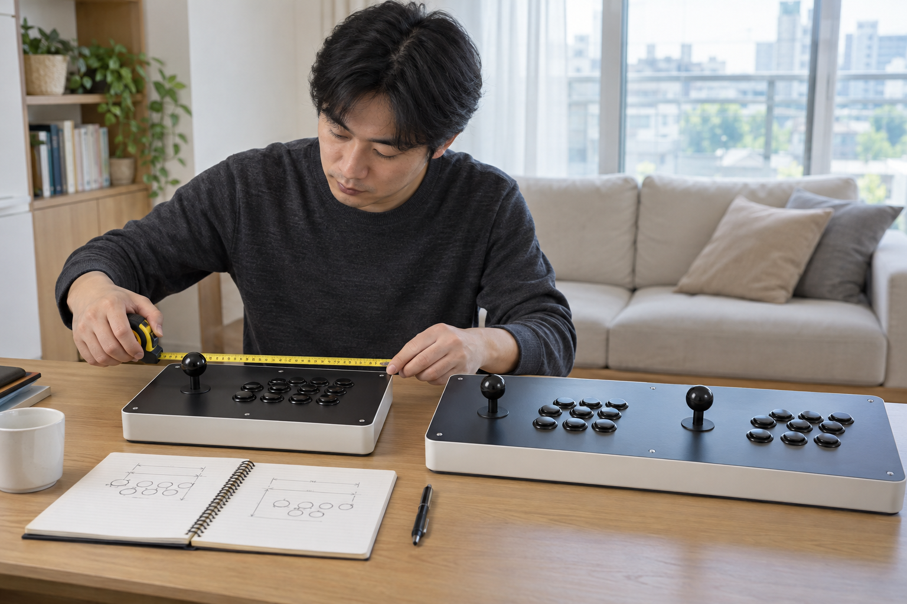

오락기 조작부는 일체형인지 분리형인지, 한 명과 두 명 중 누가 사용할지, 어느 높이와 면에 놓을지를 먼저 비교하세요. 그다음 조이스틱과 버튼의 수·간격을 원하는 게임과 실제 자세에 맞춰 확인해야 외형만 보고 고르는 일을 줄일 수 있습니다.

일체형과 분리형을 사용 장면으로 비교하세요
화면과 조작부가 한 몸인 형태는 설치 자리에서 바로 조작하는 장면을, TV 연결형처럼 조작부를 따로 두는 형태는 테이블과 케이블 동선을 함께 생각하세요. 이름만으로 이동성이나 연결 방식을 단정하지 말고 구매하려는 제품의 현재 구성과 치수를 확인해야 합니다.
조작부 형태는 외형보다 화면·자리·연결 방식이 함께 놓이는 사용 장면으로 비교해야 합니다.
제품 형태와 공간을 함께 고르는 기준은 우리 집 공간에 맞는 오락기 형태에서 이어서 확인할 수 있습니다.
한 명과 두 명의 실제 자리를 확인하세요
1인용은 조작부 전체 폭과 팔을 움직일 여유를, 2인용은 두 사람이 나란히 앉거나 설 때 어깨와 팔이 겹치지 않는지를 살펴보세요. 조이스틱과 버튼이 두 세트라고 해서 모든 게임이 두 명 동시 플레이를 지원하는 것은 아니므로 게임별 방식도 따로 확인해야 합니다.
2인용 조작부는 버튼 수뿐 아니라 두 사람이 동시에 움직일 실제 폭까지 확인해야 합니다.
- 조작부 전체 폭과 깊이
- 한 사람씩 팔을 둘 수 있는 영역
- 두 의자 또는 서는 자리의 간격
- 게임별 2인 동시·교대 플레이 방식
놓는 높이와 조작 자세를 함께 확인하세요
테이블이나 거치대에 올리는 조작부는 바닥이 평평하고 사용 중 흔들리지 않는지 확인하세요. 실제 사용할 의자에 앉거나 서서 팔꿈치와 손목이 과하게 꺾이지 않는지, 화면을 보면서도 버튼에 편하게 닿는지 살펴보는 편이 좋습니다.
조작부의 높이는 제품 치수와 함께 사용할 사람의 팔과 손목 자세로 판단해야 합니다.
조작감에 영향을 주는 조건은 오락실과 조작감이 다른 이유에서도 비교할 수 있습니다.
조이스틱과 버튼 구성을 제품별로 확인하세요
노리박스 공개 제품 목록에는 ‘무선 분리형 조이스틱 세트 PC지원’과 ‘LED 오락기버튼 PUSH 스위치 28mm’가 각각 별도 상품으로 안내되어 있습니다. 조작부와 관련 부품이 한 가지 구성만 있는 것은 아니므로, 구매 전에는 완제품에 포함된 조작부인지 별도 부품인지 구분하고 호환·연결 안내를 확인하세요.
조이스틱과 버튼은 개수보다 구매할 제품의 실제 구성과 연결 안내를 기준으로 확인해야 합니다.
제품자세히보기에서 현재 조작부 관련 제품과 완제품 구성을 확인하고, 사용할 게임과 인원·설치 높이를 정리한 뒤 연락하기에서 문의하세요.